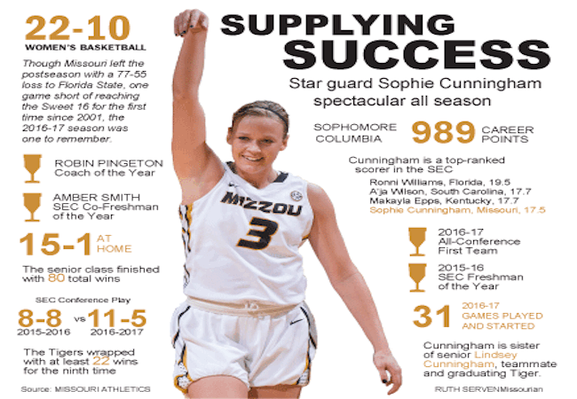

RECENT BREAKING NEWS, ENTERPRISE AND FEATURES
In the past two years, I have reported on fallout from white supremacist rallies, institutional turnover, and efforts to increase diverse enrollment at UVa. My reporting has contributed to policy changes and adjustments, whether UVa's decision not to build a softball stadium in a neighborhood or lawmaker's decision to add scrutiny to insurers' rates.
THE DAILY PROGRESS
"UVa to repay KKK donation by helping cover costs for rally's injured," The Daily Progress, 9/14/17
"Harvard dean promises to lead UVa with the power of reason," The Daily Progress, 9/15/17
"Caught in the coverage gap: Premiums spike in Central Virginia," The Daily Progress, 11/11/17
"Proposed softball stadium at Lambeth Field paused to gather input," The Daily Progress, 12/7/17
"Local veteran struggles to get medical supplies," The Daily Progress, 3/28/18
"Sullivan reflects on her tenure at UVa," The Daily Progress, 7/28/18
"Anger, distrust linger at UVa one year after rally," The Daily Progress, 8/5/18
"Protesting the police: UVa demonstration on anniversary of rally moves several times," The Daily Progress, 8/11/18
"Activists arrested outside Albemarle School Board meeting," The Daily Progress, 8/30/18
"Rally had minor impact on UVa admissions as UVa addresses financial needs and its own history," The Daily Progress, 12/8/18
"UVa declines alum's effort to play Black National Anthem at games," The Daily Progress, 1/12/19
FAVORITE PAST WORK
"In Homecoming parade, racial justice advocates take different paths," The Columbia Missourian, 10/10/15
"Loftin resigns as chancellor, effective end of the year," The Columbia Missourian, 11/9/15
"Part-time professors: Academia's 'working poor' juggle duties, expectations," The Columbia Missourian, 3/18/16
"Total solar eclipse offers small towns a tourism boom -- if they can get ready," The Kansas City Star, 7/13/16
"Imperiled Girl Scout camps being rescued from closure in Missouri," The Kansas City Star, 8/18/16
"A 'radical form of resistance': MU activists on looking back and moving forward," The Columbia Missourian, 11/6/16
"Bates-Hendricks: a neighborhood in transition" The Indy Star, 6/26/17
"'That fence has got to go': East side residents share hopes for prison site" The Indy Star, 7/25/17
INTERACTIVES AND GRAPHICS
In addition to writing, I have supplemented my reporting with interactive timelines and graphics. I'm interested in using data and visual storytelling to engage readers and display information in a variety of ways.
"Caught in the Coverage Gap" The Daily Progress, 11/11/17

"Delta Upsilon Timeline" The Columbia Missourian, 10/14/16
I've created a variety of interactive and print graphics to accompany stories. Some accompany hard news stories, like this graphic built with Tableau that accompanied a story about the decreasing amount of state funding for higher education.

Others, like this graphic, accompanied breakdowns of stories and added visual interest to a story.

SIDE HUSTLE
In addition to journalism, I write short stories, fiction and creative nonfiction. One of my short stories, "A Message," was published by Epiphany this year, and received the PEN America Emerging Writers Award.